If any damage is found on the transducer or its cable, DO NOT use the Vscan Extend. Contact GE service.
|
Contents: |
General scanning recommendations |
Before each use: |
|
Inspect the transducer (see ‘Before each use’ on page 6-3). |
After Each Use |
|
• Inspect the transducer (see ‘Cleaning the probe’ on page 6-6) • Clean the transducer (see ‘Disinfecting the probe’ on page 6-9). • If required, clean the device and the display (see ‘Using Germicides’ on page 6-7). • If required, disinfect the transducer (see ‘Disinfecting the probe’ on page 6-9). Ensure that the main unit and the transducer are properly cleaned after each use and before storing in the case. |
|
If any damage is found on the transducer or its cable, DO NOT use the Vscan Extend. Contact GE service. |
Use of gel |
|
In order to ensure optimal transmission of energy between the patient and the transducer, a conductive gel must be applied on the transducer lens. |
|
|
If the gel comes in contact with the eye, consult the gel manufacturer's instructions. The following gels have been tested to be compatible with the Vscan Extend. |
Table 5-1: Compatible Gels
Aquasonics 100 |
Parker Laboratory Inc. |
Clear Image |
Sonotech Inc. |
Scan |
Parker Laboratory Inc. |
Sonogel |
Sonogel Vertriebs GmbH |
Wavelength |
National Therapy Products Inc. |
For more information regarding probe care, refer to the website: http://www3.gehealthcare.com/en/Products/Categories/Ultrasound/Ultrasound_Probes. Select Dual Probe on Vscan and G3S Probe on Vscan from the Transducer list to get the details. |
Other recommendations |
|
Like most high frequency computing devices, the electronic components of Vscan Extend will generate some heat while operating normally and as intended. Vscan Extend is equipped with safety mechanisms which will automatically reduce computing speed (frame rate), and ultimately shut down the device, before any risk of overheating occurs. Vscan Extend is verified to comply with harmonized safety standards (see ‘Conformance Standards’ on page i-3) under any operating condition described in this user manual (see ‘Environmental requirements for the device’ on page 3-4). To help keeping the Vscan Extend operating temperature at an optimal functional level, and to ensure longer scanning time with maximum frame rate, it is recommended to hold the Vscan Extend so that there is good contact between the device and the hand. |
|
|
For patient and personnel safety, be aware of biological hazards. To avoid the risk of disease transmission: • Use protective barriers (gloves and transducer sheaths) whenever possible. • Follow all infection control policies established by your office, department or institution as they apply to personnel and equipment. |
The sector probe is provided with an orientation mark. This mark is used to identify the end of the probe corresponding to the side of the image having the orientation V mark on the scanning screen. 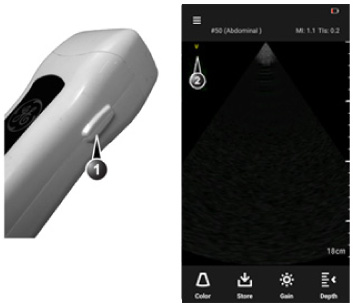 Figure 5-1. Sector probe orientation 1. Orientation marking on probe 2. Orientation marking on screen The dual probe is provided with an orientation mark and a green LED light. This mark and the LED light are identifying the orientation of the probe using the fixed symbol displayed on the screen. In the case of the dual probe, the LED light is also indicating which probe head is active. 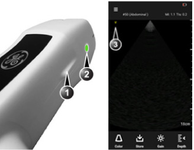 Figure 5-2. Dual probe: Orientation mark, phased array active 1. Orientation marking on probe 2. Green LED light 3. Orientation marking on screen Figure 5-3. Dual probe: Orientation mark, linear array active 1. Orientation marking on probe 2. Green LED light 3. Orientation marking on screen |
A new exam can be created in two ways: 1. The Vscan Extend is powered on and it goes to the scanning mode. 2. Create New Exam from the Menu screen. • Press Menu. • Press New Exam. |
NOTE: |
A new exam gets created when Vscan Extend enters Standby mode and also when Vscan Extend is disconnected from a PC. |
NOTE: |
A new exam will not get saved only with patient details. The exam will get saved when an image or video is saved for that exam. |
NOTE: |
It is recommended to enter patient information using alphanumeric characters. |
When an image or video is stored, the exam is automatically saved. |
NOTE: |
Current exam ends only when a new exam is created. |
Patient information can be entered in two ways: • Edit Patient on the Menu screen • DICOM - Retrieve patient information from DICOM modality worklist 1. Press Menu -> Edit Patient. 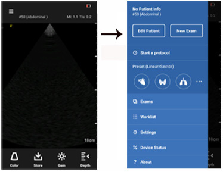 Figure 5-4. Edit patient details 2. Enter patient details and press Save. 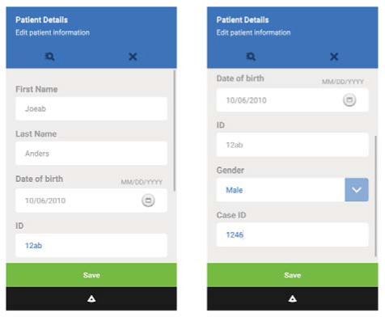 Figure 5-5. Save patient details 3. Retrieve patient information from DICOM modality worklist broker. See ‘DICOM Modality Worklist: Retrieve patient information from DICOM ModalityWorklist broker’ on page 5-38 for more information. 4. Retrieve the patient information from the DICOM modality worklist broker. Press Save. 5. Patient information also gets saved when the patient is associated with an exam with images. |
A patient can be searched from either My Worklist or by entering the patient name or ID. 1. Press Menu -> Edit Patient. 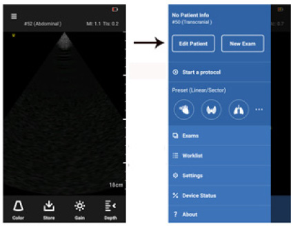 Figure 5-6. Edit patient 2. Press Search icon. 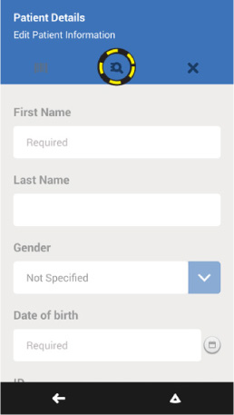 Figure 5-7. Search icon |
NOTE: |
Press the Other tab to type the patient name or ID in the search field. 4. Find patient information on My Worklist (Optional) If the device is configured for DICOM (depending on the configuration purchased), patient information can be pulled from My Worklist. Perform the exam for this patient and press Save. 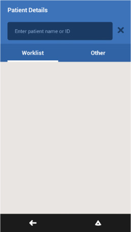 Figure 5-8. Search patient |
NOTE: |
Patient information can be modified, if needed, using the Edit Patient feature. |
The following table indicates the imaging modes supported by the probes. |
Table 5-2: Supported imaging modes
Probe |
Black and white imaging |
Color flow |
G3S Phased array |
X (Harmonic) |
X |
Dual probe (G3S phased array and G8L linear array) |
X (Harmonic for G3S phased array) |
X |
To ensure optimal image quality, the Vscan Extend has predefined scanning settings optimized for different applications (e.g. Cardiac, Abdominal). Refer to the tables below to select the correct probe and preset combination before scanning. |
Table 5-3: Phased array transducer in G3S and Dual Probe (deep scanning) presets
Phased array transducer in G3S and Dual Probe (deep scanning) |
Preset |
Optimized for |
|
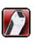 |
Cardiac |
• Heart • Aorta • Lung |
|
Abdominal |
• Liver • Kidney • Gall bladder • Spleen • Urology • Selective peripheral vascular |
||
Obstetrics |
OB/Gyn |
||
Transcranial |
Various cephalic structures |
||
|
Aorta |
Abdominal Aorta |
|
Table 5-4: Linear transducer in Dual Probe (shallow scanning) presets
Linear transducer in Dual Probe (shallow scanning) |
Preset |
Optimized for |
|
Vascular |
• Veins • Arteries |
||
Soft tissue |
• Small organs • Pediatric (recommended minimum weight: 4 kg) • Musculoskeletal - including Long bone, Hip, Knee, Shoulder and Elbow |
||
Lung |
• Thoracic/Pleural motion • Fluid detection |
||
Ophthalmic* |
Ophthalmic |
||
* Ophthalmic is available as an option for all countries but is NOT available in the USA, China and Japan. |
|||
NOTE: |
Vscan Extend with Dual probe (shallow and deep) can be used for procedural guidance. |
NOTE: |
Only three presets can be selected as favorites at one time. Deselect a current favorite in order to add another preset as a favorite. To deselect a favorite, press and hold the preset icon. The color of the icon changes to gray (Figure 5-10). |
Black and white imaging |
|
Black and white imaging is intended to provide two-dimensional images and measurement capabilities concerning the anatomical structure of soft tissue. Black and white imaging is the default scanning mode. 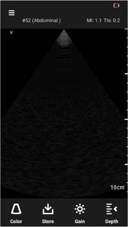 Figure 5-14. Black and white scan screen |
|
NOTE: |
As a safety precaution, scanning is not possible when charging the battery. |
Color imaging |
|
Color imaging is intended to add color coded qualitative information concerning the relative velocity (in m/s) and direction of fluid motion within the black and white image. 1. Press the Color icon. 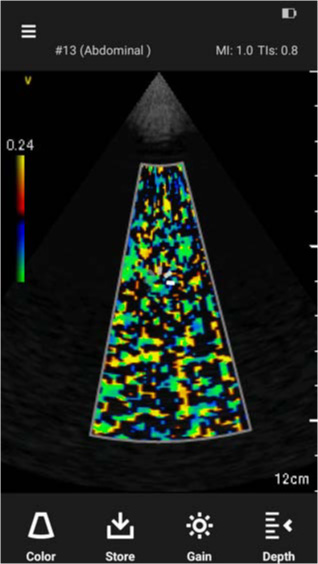 Figure 5-17. Color scan A color flow area displays on top of the black and white image. 2. Press and hold the color region of interest. The region of interest changes to yellow, indicating it is ready to be moved within the scan area. Drag the region of interest to the desired area of interest. 3. Press Gain to access the color gain control. 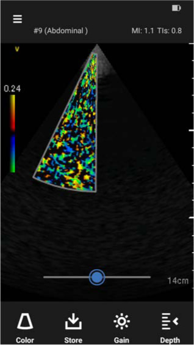 Figure 5-18. Color gain Color gain amplifies the overall strength of echoes processed in the color area. |
|
Color Aliasing |
|
If the blood flow velocity exceeds the maximum velocity range the system can cover, based on the sampling rate used, aliasing occurs. Aliasing appears as a shift in color from the color representing positive velocity to color representing negative velocity or visa versa. The maximum velocity is displayed on top of the color bar. |
|
Color steer |
|
Slant the ROI (Region of Interest) of the Color Flow linear image left or right to get more information without moving the probe. Press and hold the color region of interest. The region of interest changes to yellow, indicating it is ready to be steered in a different direction. Drag the region of interest to the left or right depending on the desired angle. |
|
NOTE: |
Angle Steer applies only to the linear functionality of the Dual Probe. 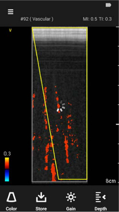 Figure 5-19. Color steer |
Auto freeze |
|
If Vscan Extend is idle for a period of time, the device enters freeze mode to minimize risk of overheating and battery drainage. Press the display to unfreeze the image and continue scanning. See ‘Scan Settings’ on page 4-2 for more information. |
|
AutoCycle |
|
Vscan Extend does not include an ECG interface as often found on larger ultrasound systems intended for cardiovascular applications. The AutoCycle feature detects a complete cardiac cycle by analyzing the cyclicity of the ultrasound intensity data. The resulting time-stamps are used for storing and playing cineloops smoothly. The AutoCycle feature should typically detect heart rates in the range 46–100 beats per minute. If the detected heart cycle is outside this range, or if the cyclicity quality is too poor, a default loop will be saved based on image data and configuration. The detected start and stop times for the AutoCycle are not necessarily in phase with the QRS complex. Since adequate cyclicity can only be expected in cardiac applications, all other applications will use the default config settings. |
|
Use of sterile sheath |
|
It is recommended to use a sterile sheath around the probe and main unit if Vscan Extend is used as an aid to needle guidance or in any clinical situation where contamination could be a concern. |
|
Taking measurements |
|
Vscan Extend enables distance measurement on frozen images in both black and white and color imaging. Up to eight measurements can be performed on an image. Measurements can be done during image review or on recalled stored images. To perform a measurement: 1. On a frozen image, press Distance. The measurement calipers displays. 2. Drag to position the calipers to obtain the desired measurement. 3. To store the image with a measurement, press Store. 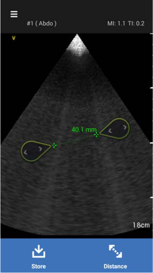 Figure 5-20. Measurement 4. Press Add New to make additional measurements on the displayed image. Up to 8 measurements can be made on a single image. 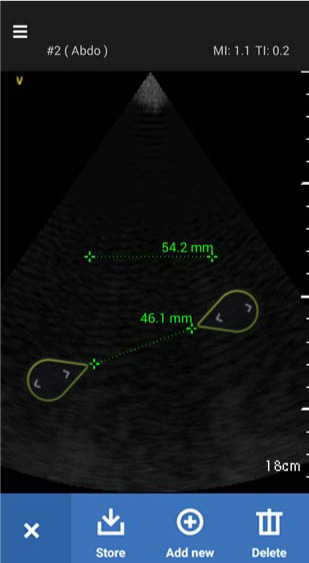 Figure 5-21. Add new measurement 5. Press Delete to delete a single measurement. |
|
Backups Recommended |
|
During live scanning, acquired images or videos are stored in the internal memory (image buffer). When the internal memory reaches 45% to 50% of its capacity, it is recommended to perform backup. To prevent loss of any images and videos, previously acquired images and videos must be stored to the microSD card. See ‘Backup’ on page 5-44 for more information. |
|
NOTE: |
The number of images and videos that can be stored depends on the internal memory of the device. |
NOTE: |
Backup data at regular intervals. If backup is not performed, the internal memory data can be lost and cannot be retrieved. |
Reviewing and recalling images or videos from an exam list |
|
1. Press Menu. 2. Press Exams. A list of exams, with stored images and videos, display. 3. Press on the desired patient and then press the image or video to get the full screen view. Figure 5-22. View stored images and videos |
|
NOTE: |
Press on the stored image in the Exams screen. Use the right/ left arrow to navigate through the images/videos. 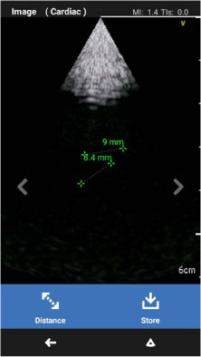 Figure 5-23. Press arrow |
Search patient |
|
To view previous exam details for a patient See Figure 5-22 on page 5-27: 1. Press the Search icon on the exam list screen. 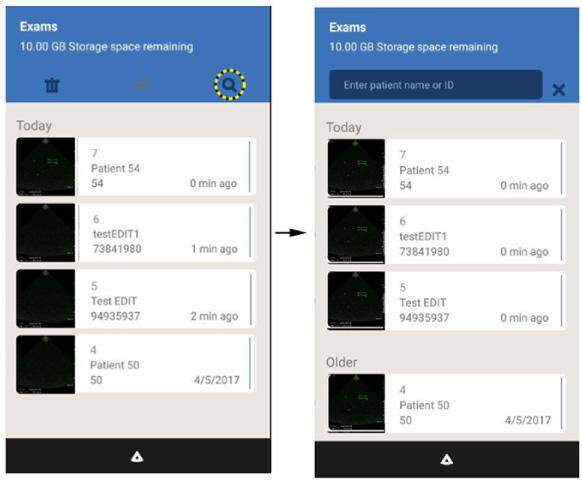 Figure 5-24. Search patient 2. Enter the patient name or patient ID in the search field. Previous exam details for this patient displays. |
|
To delete a file |
|
You can delete images or videos individually or from an exam list. |
|
Deleting individual images or videos |
|
1. Press Menu. 2. Press Exams. 3. Select the Exam from which images or videos are to be deleted. 4. Press Delete. 5. Select the images or videos to be deleted. 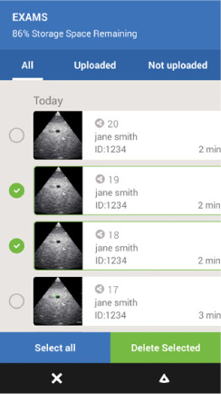 Figure 5-25. Images to be deleted 6. Press Delete to delete the images. OR 7. Press Cancel to cancel deletion. Figure 5-26. Delete or cancel |
|
Data Export |
|
Data can be exported to a PC (‘USB Export’ on page 5-33), shared to a PC, exported to a DICOM server (‘DICOM Store: exporting DICOM images from Vscan Extend to DICOM image server’ on page 5-41), through Windows Share (‘Windows Share’ on page 5-32) or Tricefy Uplink (‘Tricefy Uplink app’ on page 5-64), if available on the device purchased. |
|
Audit Logs |
|
The Vscan Extend has audit logs of various types of events and activities. The audit logs captured in the microSD card can be exported to a PC. A report can be generated using these audit logs. The audit logs capture the following information: 1. Device Start/Shut-down time 2. Incorrect password attempts 3. Additions and modifications to system configuration, including: • DICOM connection • Windows Share connection • Wi-Fi connection and security details (SSID, Network disconnect/connect timings) • Application software install/uninstall/upgrade • Registration of partnering apps 4. Events related to Patient Data, including the following details: • Date/Time of data access • Type of action (addition, deletion, modification, reviewed) | |
NOTE: |
Audit logs do not show the transfer of data to the PC. • Applications used (Bladder Volume, Lung Protocol, etc.) 5. Data Export • Date/Time of data export, including end point and Wi-Fi SSID information • Data Backup/Restore details 6. Invalid Device PIN attempt 7. Kiosk admin mode login success and failure |
Patient images and videos can be transferred from Vscan Extend to a Personal Computer (PC) using a USB cable. |
NOTE: |
The Vscan Extend is charged only with the AC adapter. The USB cable, connected to a PC, does not charge the device. |
Export filesJPG and MPEG files, stored on the device internal memory, can be exported to a PC with a USB cable. The folder and file names start with the device ID (serial number), then exam ID and a random number. The folder structure looks like: ....\Archive\EEEEEEE-XXXXXXX\NNNNN.mpg ....\Archive\EEEEEEE-XXXXXXX\NNNNN.jpg where EEEEEEE is the device ID. XXXXXX is the exam ID. NNNNN, a random number is the file number in the folder. The files, file names, and folder names are non-patient identifiable. 1. Connect the Vscan Extend to a PC with the USB cable. A pop-up message displays, prompting to allow the system to connect to the PC. 2. Press Allow. Copy the files from the Vscan Extend to the PC. |
Windows share allows the system to send ultrasound images to a PC. 1. Create a shared folder on the PC and provide the credentials and domain name. 2. Provide access to users who need access to the shared folder. 3. Press Windows share from the list. Enter the required details - Name, Domain, Remote IP Address, Share Folder, User name and Password. 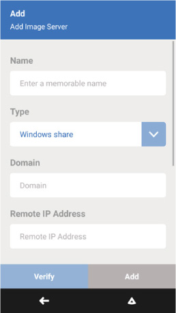 Figure 5-28. Windows share 4. Press Add. |
NOTE: |
All the required fields need to be entered. 5. Press Verify. A Verify OK message displays. |
NOTE: |
Windows Share can also be added as a favorite and can be deleted as a favorite. |
NOTE: |
Share option is enabled only when any one of the fields in the patient details page is entered. Only images and videos are exported to the PC with the patient information anonymized. |
1. Press Menu on the scan screen. 2. Press Exams to be exported. 3. Press Upload Selected. 4. Select the created Windows Share destination. The exported folder is as shown in the Figure 5-29 below. 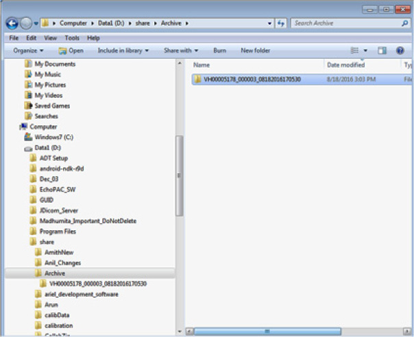 Figure 5-29. Exported image folder Figure 5-30. Images inside the exam folder 5. If the exported image does not get transferred to the PC or if the transfer fails, a red icon appears next to the image. |
To monitor DICOM and Windows share jobs, press Menu -> Device Status. 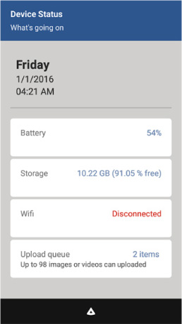 Figure 5-31. Device Status |
NOTE: |
This feature is available with the DICOM configuration. |
Vscan Extend supports the following DICOM functionality: • Verify. See ‘Configure Worklist Server’ on page 4-5 for more information. • Modality Worklist • Store DICOM users can use: 1. DICOM Modality Worklist: Retrieve patient information from DICOM modality worklist broker 2. Add patient identifying information to exam. • manually • selecting from modality worklist 3. DICOM Store: Export DICOM images from Vscan Extend to the DICOM image server. |
To configure the DICOM modality worklist server, See ‘Configure Worklist Server’ on page 4-5 for more information. |
Vscan Extend can download and refresh a DICOM modality worklist. An exam can be linked to an existing patient pulled from the worklist, prior to exporting to the DICOM image server. |
NOTE: |
It is not necessary to refresh the modality worklist for each exam. |
NOTE: |
It is not be possible to change the following DICOM attributes received from worklist: Patient Name, Patient ID and Accession Number. |
NOTE: |
If there are no scheduled cases for the dates, a pop-up messages displays. |
NOTE: |
If the 'Abstract syntax not supported', worklist download fails. 3. Press the Search icon to search a particular patient. See Figure 5-33 on page 5-39 4. Enter the patient name or patient ID. 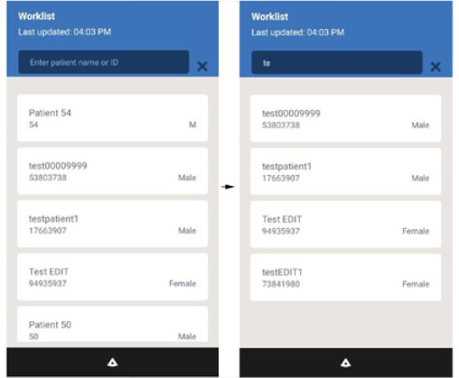 Figure 5-34. New exam A new exam automatically gets created for this patient. Figure 5-35. New exam |
At the end of an exam, ensure the Patient ID is linked to the exam. This is required before exporting images or videos. See ‘Patient examination’ on page 5-7 for more information. 1. Press Menu -> Exams 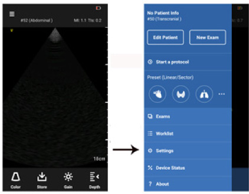 Figure 5-36. Exams 2. Press the Export icon. 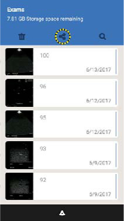 Figure 5-37. Export |
NOTE: |
Individual images from an exam or an entire exam can be selected for export. |
NOTE: |
Press ‘i’ icon to view the error message. |
NOTE: |
To refresh the screen to see the current status, exit the page and return to the same page. 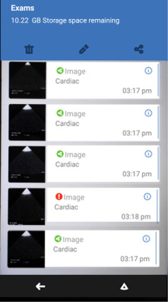 Figure 5-40. Transfer failed All still images can be sent to the DICOM image server. Videos may be sent to the DICOM image server only if “Enable MultiFrame DICOM” is selected in the DICOM server configuration. Up to 100 images can be exported at one time. The multiframe video is limited to 4 seconds. |
NOTE: |
If the export is unsuccessful, it takes about 20 minutes until a failure message appears as the device attempts to resend the images/videos. |
It is highly recommended to backup patient data on a microSD card, at regular intervals, to avoid data loss. The microSD card inside the device captures the error log files. |
|
It is important to retain these error logs. It is also recommended to perform a backup of these logs for specified dates. GE is not responsible for loss data of these logs. Backup MUST be performed before sending the system to the repair depot as the data is wiped from the internal memory and cannot be retrieved. |
NOTE: |
Use a blank microSD card with a capacity <=32GB to perform backup. |
NOTE: |
The microSD card backup requires a length of time to process, the time being dependent on the number of images/videos requiring backup. For example, 1000+ videos in 50 to 60 exams takes approximately 14 minutes to back up to the microSD card. To backup patient data: 1. Power OFF the Vscan Extend. 2. Remove the Battery. See ‘Inserting/removing the battery’ on page 3-23 for more information. 3. Remove the microSD card containing the log files from the device and insert a blank microSD card. See Figure 6-3 on page 6-12 to insert the SD card. 4. Power ON the Vscan Extend. 5. Press Menu -> Settings -> Backup. 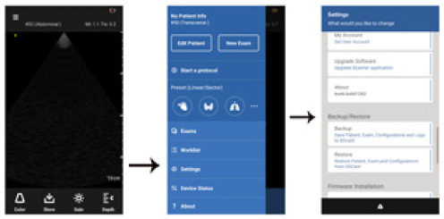 Figure 5-41. Backup 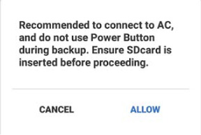 Figure 5-42. Backup data message Press Allow to initiate backup OR Cancel to stop the backup process. 7. If the backup process is successful, the patient, exam, logs, and configuration data are backed up on the microSD card. The following message displays. 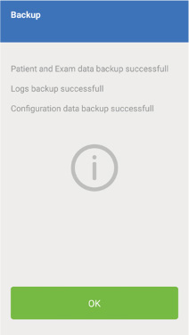 Figure 5-43. Backup successful If the backup process is unsuccessful, a failed message displays. Figure 5-44. Backup failed |
NOTE: |
If the available memory on the microSD card is less than 50% when initiating backup, the process fails. Retry backup. If still unsuccessful, insert a new microSD card and try again. 8. After backup is complete, power OFF the Vscan Extend. Remove the battery. Remove the backup microSD card and store in a safe place. 9. Insert the original microSD card, containing the error logs, into the device. Power ON the Vscan Extend. |
|
The restore procedure overwrites the existing data on the Vscan Extend. When restoring previously-backed up patient data, you must first backup the current patient data as the restore procedure overwrites the existing data. See ‘Backup’ on page 5-44 for more information. Make sure to insert the correct microSD card. |
NOTE: |
The restore operation does not restore backed up logs. 1. Power OFF the Vscan Extend. 2. Remove the Battery. See ‘Inserting/removing the battery’ on page 3-23 for more information. Remove the microSD card containing the log files from the device. 3. Insert the microSD card with the backed up data. See Figure 6-3 on page 6-12 to insert the SD card. 4. Power ON the Vscan Extend. 5. Press Menu -> Settings -> Restore. 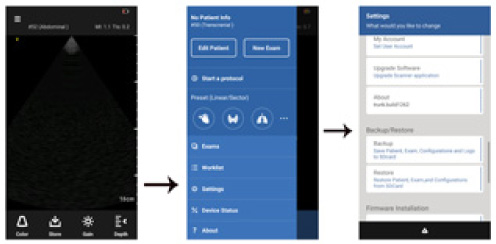 Figure 5-45. Restore 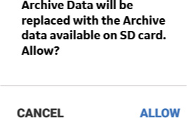 Figure 5-46. Restore Confirmation Press Allow to initiate restore OR Cancel to stop the restore process. 7. If the restore procedure is successful, the patient, exam, and configuration data are restored to the device. If the restore procedure fails, a pop-up displays. Figure 5-47. Restore failed If the microSD card does not contain any patient details to restore, a pop-up displays. The system automatically shuts down. Figure 5-48. Power off 8. After restore is complete, power OFF the Vscan Extend. Remove the battery. Remove the backup microSD card and store in a safe place. The data is still retained on the microSD card. 9. Insert the original microSD card, containing the error logs, into the device. Power on the Vscan Extend. |
The following apps are applicable for the software version 1.X.X. For more information contact your local applications, sales or service representative. • Bladder Volume app • Lung Protocol app • Tricefy Uplink app The following apps are applicable for the software version 1.2.X. For more information contact your local applications, sales or service representative. • Protocol Creator app • Scan Coach RHD app • Scan Coach FATE app • Scan Coach FCU app • LVivo EF app • Lung M-Mode app • Screen Mirror app • Enterprise Archive Uplink app • Comprehensive Label app • Auto Optimize app • AV Plane app |
For installing Vscan Extend apps, refer ‘Installing Vscan Extend apps’ on page 4-36. |
NOTE: |
When multiple applications are installed that can be used during scanning, an arrow appears on the scan screen to expand the display of two levels of apps icons. For Uninstalling Vscan Extend apps, refer ‘Uninstalling apps’ on page 4-38. |
The Bladder Volume app is a protocol enabled measurement tool for calculating urinary bladder volumes. The protocol includes an edge-detection algorithm that suggests and automatically places the measure calipers for transverse and sagittal view. These measurements can be accepted or adjusted manually by the user to get the bladder volume. The Bladder Volume app calculates the bladder volume using 3 distance measurements from two orthogonal images (transverse and sagittal). Two distances are taken from the transverse image and one distance from the sagittal image, at the widest points, to calculate the bladder volume. |
1. Press App Settings from the Settings menu. A pop-up displays. 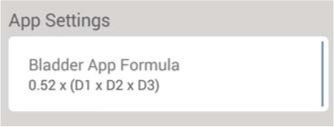 Figure 5-49. Bladder Volume app settings 2. Press on the desired formula. 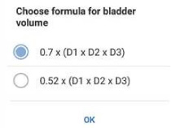 Figure 5-50. Bladder volume formula • [0.7 x (D1 x D2 x D3)] • [0.52 x (D1 x D2 x D3)] |
NOTE: |
The Transverse Measure screen is displayed by default. |
The image is saved with the measurement values and volume embedded on it. View the saved images from the gallery. |
NOTE: |
The Bladder app cannot be used on stored images in the gallery. Exiting Bladder Volume1. Press Close to exit the Bladder Volume App. 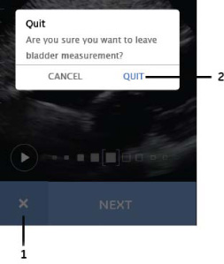 Figure 5-56. Exit Bladder Volume App 1. Close 2. Quit A pop-up displays for confirmation. 2. Press Quit to exit the Bladder Volume app. 3. Press Cancel to continue using the Bladder Volume app. |
NOTE: |
When you start a new exam, the Bladder Volume app exits. |
The Lung Protocol provides a template to systematically acquire and evaluate thoracic ultrasound images. Images will be acquired in a defined order by thorax area. After completing image acquisition for whole thorax, each area can be reviewed and scored or qualitatively assessed. A simple report is summarizing findings. The lung protocol can be configured by number of thoracic areas, and by choice between qualitative assessment and scoring. With the latest app update, the user can set the default preset selecting between lung preset (linear transducer) and cardiac preset (sector transducer). The application performs the following functions: 1. Automatic lung preset selection 2. Guides or helps assessing the stored images 3. Helps to calculate a total lung score 4. Generates a simple report at the end of the exam |
1. Press Start a protocol on the Menu screen. 2. Press the Lung Protocols Settings icon on the Protocols screen to choose the desired settings. 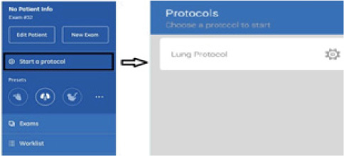 Figure 5-57. Start a protocol Figure 5-58. Settings The Settings menu has the following functions: • choose the number of segments to be scanned • choose the type of assessment • enable/disable the Help mode. |
Three different configurations are available for the number of segments. Press on the radio button to choose any one of the following: • 4 x 2 • 7 x 2 • 6 x 2 |
Two types of assessment are available. Press on the radio button to choose the desired type of assessment. • Quantitative • Qualitative. |
Help mode helps the user with tips during the Lung Protocol. Swipe from left to right to turn ON the Help mode on the Lung Protocol Settings menu. See Figure 5-58 on page 5-56. Help mode assists in the following: • Skip - when you enter the next segment, swipe from right to left to skip the current segment. • Next - swipe from right to left to enter the next segment. • When multiple images are scored in the same segment, a pop-up appears: “Only latest saved image will be available for review”. 3. Press the Back arrow to return to the Protocols screen. Figure 5-59. Back arrow 4. Press Lung Protocol to start using the lung protocol. |
NOTE: |
The settings are automatically saved. If the settings need to be changed, stop the current protocol on the menu screen and modify the current settings on the Settings menu. |
NOTE: |
The user is able to store multiple images per segment. Only the latest saved image, for a particular segment, is available for review. However, the user can view all the images in the Gallery under the current exam. |
NOTE: |
The appearance of the 'Gallery' icon indicates if an image and/or video is stored in the segment. |
After all the images are stored for all the segments, a pop-up displays: Figure 5-63. Score images Press Score to score the images. Choose the score for each segment. OR Press Go Back to acquire more images. Depending on the type of assessment chosen on the Lung Protocol Settings menu, either Quantitative or Qualitative assessment scores are displayed. Both the screens are shown below. Figure 5-64. Quantitative and Qualitative Scores 1. Quantitative 2. Qualitative |
NOTE: |
It is not mandatory to score all images. |
The report shows the current patient name, patient ID, and total lung score. Figure 5-65. Quantitative report
Figure 5-66. Qualitative report Press Save to save the report. The report is stored with all the images and videos from the gallery. Press Exams on the Menu screen to view the images and the report. |
1. Press Menu on the Lung protocol screen. 2. Press Stop current protocol. A pop-up displays. Figure 5-67. Stop current protocol 3. Press Exit to stop the protocol. |
The Tricefy™ Uplink app includes the interface to Tricefy. Tricefy is a cloud-based solution to support archiving, collaboration and exchange of images, clips and reports. Start a free trial by registering with your email address. Your Vscan Extend will immediately be cloud-enabled giving you an offsite secure image archive, a zero-footprint DICOM viewer and all the sharing and collaboration features in Tricefy. Tricefy is a product of Trice Imaging. Trice bears sole responsibility for the Tricefy Uplink app and Tricefy cloud solution. Tricefy trademarks are registered trademarks of Trice Imaging, Inc. |
NOTE: |
Tricefy Uplink is a Vscan Extend app separately provided to the customer by Trice Imaging. All customers of Vscan Extend in Wi-Fi Access or DICOM configuration may elect to download the app, but an agreement with Trice has to be entered before this app can be used with Tricefy. Such agreement will be between Trice and the customer. Trice Imaging bears sole responsibility for the Tricefy Uplink app and Tricefy cloud solution. |
NOTE: |
* Applications under GE Marketplace are available as options (not available in all geographies). |
1. Press Menu -> Exams -> Export icon. Figure 5-71. Export 2. Press Upload Selected to export the exam. Figure 5-72. Upload selected exam The selected exam(s) are exported to the Tricefy server. |
NOTE: |
If several storage destinations are configured, the user needs to select the intended destination, in this case, the Tricefy server. |
The Protocol Creator app enables Vscan Extend™ users to create a customized exam script that will help guide users through an ultrasound image acquisition protocol for a Vscan Extend exam. These protocols can help increase consistency with exams by providing a list of scan planes and context-sensitive help. Automated presets for all steps and automated annotations for saved images are provided to help enhance productivity. Users can also customize protocols to include ultrasound images that can be used as reference during the exam. Vscan Extend is a trademark of General Electric Company. |
NOTE: |
* Applications under GE Marketplace are available as options (not available in all geographies). |
1. Press Start a protocol from the Menu screen. 2. Press CREATE A PROTOCOL on the Protocols screen. Figure 5-73. Create a protocol |
NOTE: |
This step is mandatory. If you do not enter a name, an error message displays indicating to add protocol name, while trying to save the protocol or moving to the next step. 4. Enter a description about the protocol. |
NOTE: |
Entering the description is optional. |
NOTE: |
The maximum length for a protocol name and description is 50 characters. |
1. Press ADD STEP on the Create new steps screen. Figure 5-74. Add Step 2. Enter a step name. 3. Select a preset for this step. Figure 5-75. Select a preset 4. Add reference images for the step. For detailed instructions on how to add reference images refer to ‘Adding reference images to a step’ on page 5-71. |
NOTE: |
Adding the refrence images is optional. 5. Enter the user instructions for that step. |
NOTE: |
Entering user instructions is optional. 6. Press “SAVE STEP” to add the created step to the protocol. |
1. Press Add Step to add the next step. 2. Follow the steps described above to enter name, select preset, to add reference images and to enter user instructions for each new step that is added. Repeat the procedure to add as many steps as needed to the protocol. |
1. The reference images to be added to a protocol step should be uploaded to a pre-defined folder on the Vscan Extend device from a PC. |
NOTE: |
The recommended format for reference images is .mp4 and .jpeg. If you upload any other formats than .mp4 and .jpeg, the system displays an error message. |
2. Connect the device to a PC via the USB cable. A pop-up message “Allow system to connect to PC.Further interaction with device is blocked” displays. Press Allow to connect. 3. Create a folder named “Protocol” on the device in the following path. Computer\Pixel V2+\Phone storage\Protocol 4. Create another folder named “Images” inside the “Protocol” folder. 5. Copy the reference images from the PC to “Images” folder. |
NOTE: |
The recommended format for reference images is .mp4 and .jpeg. If you upload any other formats than .mp4 and .jpeg, the system displays an error message. The recommended resolution of the reference images is 240 x 320. If you try to upload an image with a different resolution, the system scales the size to maintain the aspect ratio of the original image. 6. Disconnect the device from the PC. |
1. After you have finished adding all steps for the protocol, press Save Protocol to complete creating the protocol. Figure 5-78. Save Protocol 2. Press Menu -> Start a protocol to view the user created protocols under My Protocols. Refer to the ‘Creating a new protocol’ on page 5-67 to create additional protocols. The protocols can be edited before or after saving. Refer the ‘Edit an existing user created protocol’ on page 5-74 to edit protocols. |
1. Press Menu -> Start a protocol 2. Press Settings icon on the user created protocol under My Protocols. Figure 5-79. Settings |
1. Press Edit button to modify the current protocol. Make the desired changes to the Protocol name or Description. 2. Press Next to add/ delete/modify protocol steps, instructions and reference content. 3. Press Save Protocol to save your changes. |
1. Press Delete button to delete the protocol. Figure 5-80. Delete protocol A popup displays to confirm delete action. Figure 5-81. Delete protocol message |
Click the desired checkboxes to set up the system to your preferences: • Soft key hints - shows user interface hints for this protocol • User instructions - shows instruction for the particular step • Steps overview page - displays the list of steps for the protocol prior to the exam |
1. Press Menu -> Start a protocol. Select the desired protocol under My Protocols from the protocol page. Figure 5-82. Choose protocol 2. Press START button on the Steps Overview screen to start the protocol. |
NOTE: |
The Steps Overview screen displays only if you have enabled the checkbox under settings. If not, the protocol goes directly to the first step after selecting Start a protocol from the Menu page. |
NOTE: |
You can choose to press on any step name on the Steps Overview screen to start that protocol from that particular step. |
3. Press a step name on the Steps Overview screen. User Instructions message box displays for the step. |
NOTE: |
The User instructions display only if you have enabled the checkbox under settings. 4. Press OK on the message box to return to the scan screen. The live screen displays the following interface elements for the current protocol: • Current step name - displays the step text. For example, Parasternal Long - B mode • Step number - displays previous (for example 2), current (3) and next step numbers (4) • Info icon - invokes Scan Coach help windows for current step |
NOTE: |
The info icon is visible only if the custom protocol has reference images attached to it. While acquiring an image in a particular step, Press the Info (i’) icon to access Scan Coach reference help for that step. Scan Coach reference window displays with two tabs - Reference and Steps. Figure 5-83. Reference window • Reference - Provides access to multiple ultrasound image examples that have been attached to the current scan plane. You can access all available reference images swiping left or right. |
By default the reference image tab is activated when you press the info icon for the first time. The white color in the image header represents an example of a normal image, while red color represents an example of a pathology image. |
NOTE: |
When you toggle between Scan Coach window and the live scan screen, the system remembers and displays the last seen Scan Coach tab. • Steps - checklist of all steps showing the completion status for each step. |
NOTE: |
A green dot next to the thumbnail of the saved image indicates the completion status of the step. 5. Once you acquire an image for the current step, press Store. The stored image shows the current step name. The red dot next to the step turns green on the Steps Overview page. 6. Enter the storage PIN when you store the image for the first time. |
NOTE: |
A device PIN has to be created for security purposes to access or store images/videos. This PIN is created prior to the first use or after the system has been reset. Once the PIN is set, the user is prompted for the PIN when: • Images/videos are stored in the spooler • User wishes to store an image/video • The session duration time has expired |
NOTE: |
You can swipe right to left to go to the next step, without storing the image, if you wish. In such a case, the step does not get registered as complete. You will see a red icon next to the image in the Session Completed screen. Session completed screen displays. 10. Check the status of the steps on the Session Completed screen. |
NOTE: |
You can either navigate directly to a step to acquire any missing views or exit the protocol. |
11. When you have completed all the acquisition and wish to exit the protocol, press Exit to quit the protocol. OR Press Cancel to update captures. |
NOTE: |
If you wish to stop the protocol in the middle of a scan, press the Menu icon on the header. Press “Stop current protocol”. |
You can export or import protocols via a USB cable connected to a PC. User-defined protocols created using Protocol Creator tool can be exported to a PC for back-up and subsequently imported to other Vscan Extend devices that have the Protocol Creator app installed on them. |
NOTE: |
Once the Protocol Creator application uninstalls, you cannot run the custom protocol already created. |
NOTE: |
When you create a new protocol, a folder named “Protocol” gets created automatically in the device under Phone Storage.Under this Protocol folder Import folder and Images folder also gets created. |
1. Press Settings on the protocol page. 2. Press Export this protocol. Figure 5-84. Export this protocol 3. A popup displays asking to confirm protocol export. Press Export. The protocol exports to a folder Protocol\Export on the device. Protocol export success popup message displays. Connect the device to PC and copy the exported protocol from “\Protocol\Export folder” to use on another Vscan Extend device if needed. |
NOTE: |
Export folder under Protocols folder gets created only when you press “Export this protocol” button.. |
NOTE: |
Exam images do not get exported while exporting protocol. |
1. Connect the device to a PC via the USB cable. A pop-up message “Allow system to connect to PC.Further interaction with device is blocked” displays. Press Allow to connect. 2. Create a folder named “Protocol” on the device in the following path, if not already created. Computer\Pixel V2+\Phone storage\Protocol 3. Create another folder named “Import” under the “Protocol” folder, if not already created. 4. Copy the specific protocol into Import folder on the device. 5. When you access the Protocol screen next time, a pop-up message displays that new protocols are available for import. You can choose to import or cancel the new protocols. Figure 5-85. Import Protocol 6. Press Import to import the new protocols. Imported protocols are available under the My protocols list. |
Scan Coach module for Rheumatic Heart Disease (RHD) evaluation provides a protocol of standard ultrasound imaging views and context-based reference materials to perform a systematic evaluation for presence of RHD. The steps overview page provides a checklist of views defined by the protocol to track completion during the exam. The protocol and images have been provided by Dr. Craig Sable of Children’s National Hospital. |
NOTE: |
Read the app description and the Disclaimer before installing the Scan Coach RHD protocol. |
NOTE: |
* Applications under GE Marketplace are available as options (not available in all geographies). |
The Vscan Extend system includes a feature called Scan Coach to assist the ultrasound user with scanning and acquiring images. Scan Coach is not meant to replace user training which is required to obtain acceptable images. Scan Coach provides reference material to guide image acquisition, but does not identify diagnostic image quality. Actual images obtained by the user of the device may vary versus the reference material provided by Scan Coach. The Ultrasound user is solely responsible to complete all necessary and customary training prior to using the Ultrasound and for the actual image acquisition, image interpretation, identification of anatomical parts, anatomical measurements and clinical diagnosis. Click the “I understand and accept” checkbox. |
During the exam, users can access examples of reference ultrasound images of normal anatomy and some common pathologies for individual scan planes. Animations are available to demonstrate the relationship of the probe position with the resulting ultrasound image. Annotated schematics with anatomical landmarks provide additional reference. A protocol step status provides a checklist of views defined by the protocol to track completion during the exam.User instructions at the beginning of every step provide information related to the specific view. |
1. Press Start a protocol from the Menu screen. 2. Press Scan Coach RHD protocol settings icon to choose the desired settings. Figure 5-86. Scan Coach RHD settings Click the desired checkboxes to set up the system to your preferences: • Soft key hints - shows user instructions hints for this protocol • User instructions - shows instruction for the particular step • Steps overview page - displays the list of steps for the RHD protocol prior to the exam as listed in Table 5-5 |
Table 5-5: List of Steps
Step Number |
Description |
1) |
Parasternal Long - 2D |
2) |
Parasternal Long - MV thickness |
3) |
Parasternal Long - Color |
4) |
Parasternal Long - MR jet length |
5) |
Parasternal Long - AR jet length |
6) |
Parasternal Short - 2D |
7) |
Ap 4 and 5 chamber - 2D |
8) |
Ap 4 chamber – MV Color |
9) |
Ap 5 chamber – AoV Color |
10) |
Ap 4 chamber - MR jet length |
11) |
Ap 5 chamber - AR jet length |
NOTE: |
By default the reference image tab is activated when you press the info icon for the first time. The white color in the image header represents an example of a normal image, while red color represents an example of a pathology image. Figure 5-90. Reference Image Normal Figure 5-91. Reference Image Pathology |
NOTE: |
A device PIN has to be created for security purposes to access or store images/videos. This PIN is created prior to the first use or after the system has been reset. Once the PIN is set, the user is prompted for the PIN when: • Images/videos are stored in the spooler • User wishes to store an image/video • The session duration time has expired |
NOTE: |
You can store multiple images for a particular scan plane, if needed. All the images are annotated with the step name. 8. Swipe right to left to navigate to the next step. 9. Complete the acquisition procedure described above. Follow the same procedure for the remaining steps in the protocol. |
NOTE: |
You can swipe right to left to go to the next step, without storing an image, if you wish. In such a case, the step does not get registered as complete. You will see a red icon next to the image in the Session Completed screen. |
NOTE: |
If you wish to stop the protocol anytime in the middle of a scan, press the Menu icon on the header. Press “Stop current protocol” to exit. Figure 5-95. Stop protocol |
The Scan Coach module for Focused Assessment Transthoracic Echo (FATE) provides a protocol of standard ultrasound imaging views and context-based reference materials to perform a systematic FATE exam. During the exam, users will have access to a reference ultrasound image of normal anatomy and examples of common pathologies for each scan plane. It provides 3D animations to help remind the user the relationship of probe positioning with resulting ultrasound images and annotated schematics for anatomical landmarks help acquire desired views. The steps overview page provides a checklist of views defined by the protocol to track completion during the exam. User instructions at the beginning of every step provide information related to the specific view and can be deactivated if not needed. The protocol and images have been provided by Professor Erik Sloth, Aarhus University, Denmark. |
NOTE: |
Read the app description and the Disclaimer before installing the Scan Coach FATE protocol. |
NOTE: |
* Applications under GE Marketplace are available as options (not available in all geographies). |
DISCLAIMER |
The Vscan Extend system includes a feature called Scan Coach to assist the Ultrasound user with scanning and acquiring images. Scan Coach is not meant to replace user training which is required to obtain acceptable images. Scan Coach provides reference material to guide image acquisition, but does not identify diagnostic image quality. Actual images obtained by the user of the device may vary versus the reference material provided by Scan Coach. The Ultrasound user is solely responsible to complete all necessary and customary training prior to using the Ultrasound and for the actual image acquisition, image interpretation, identification of anatomical parts, anatomical measurements and clinical diagnosis. Click the “I understand and accept” checkbox. |
During the exam, users can access examples of reference ultrasound images of normal anatomy and some common pathologies for individual scan planes. Animations are available to demonstrate the relationship of the probe position with the resulting ultrasound image. Annotated schematics with anatomical landmarks provide additional reference. A protocol step status provides a checklist of views defined by the protocol to track completion during the exam.User instructions at the beginning of every step provide information related to the specific view. 1. Press Start a protocol from the Menu screen. 2. Press Scan Coach FATE protocol settings icon to choose the desired settings. Figure 5-96. Scan Coach FATE settings Click the desired checkboxes to set up the system to your preferences: • Soft key hints - shows user instructions hints for this protocol • User instructions - shows instruction for the particular step • Steps overview page - displays the list of steps for the FATE protocol prior to the exam as listed in Table 5-6 Table 5-6: List of Steps
1. Press Menu -> Start a protocol. Select the Scan Coach FATE protocol from the protocol page. 2. Press START button on the Steps Overview screen to start the protocol. OR Press a step name on the Steps Overview screen to start the protocol from that step Figure 5-97. Steps overview 3. User Instructions message box displays for the step. 4. Press OK on the message box to navigate to the scan screen. |
NOTE: |
The Steps Overview screen and User instructions display only if you have enabled them from the settings. If not enabled, the protocol goes directly to the first step after selecting Start a protocol from the Menu page. Figure 5-98. User instructions |
NOTE: |
By default the reference image tab is activated when you press the info icon for the first time. The white color in the image header represents an example of a normal image, while red color represents an example of a pathology image. Figure 5-100. Reference Image Normal Figure 5-101. Reference Image Pathology |
NOTE: |
A device PIN has to be created for security purposes to access or store images/videos. This PIN is created prior to the first use or after the system has been reset. Once the PIN is set, the user is prompted for the PIN when: • Images/videos are stored in the spooler • User wishes to store an image/video • The session duration time has expired |
NOTE: |
You can store multiple images for a particular scan plane, if needed. All the images are annotated with the step name. 9. Swipe right to left to navigate to the next step. 10. Complete the acquisition procedure described above. Follow the same procedure for the remaining steps in the protocol. |
If you wish to stop the protocol anytime in the middle of a scan, press the Menu icon on the header. Press “Stop current protocol” to exit. Figure 5-105. Stop protocol |
Scan Coach module for Focused Cardiac Ultrasound (FCU) evaluation provides a protocol of standard ultrasound imaging views and context-based reference materials to perform a systematic evaluation of the heart. During the exam, users will have access to a reference ultrasound image of normal anatomy and examples of common pathologies for each scan plane. It provides 3D animations to help remind the user the relationship of probe positioning with resulting ultrasound images and annotated schematics for anatomical landmarks help acquire desired views. The steps overview page provides a checklist of views defined by the protocol to track completion during the exam. User instructions at the beginning of each step provide information related to the specific view and can be deactivated if not needed. The protocol and images have been provided by Dr. William Zoghbi, Houston Methodist. |
NOTE: |
Read the app description and the Disclaimer before installing the Scan Coach FCU protocol. |
NOTE: |
* Applications under GE Marketplace are available as options (not available in all geographies). |
DISCLAIMER |
The Vscan Extend system includes a feature called Scan Coach to assist the Ultrasound user with scanning and acquiring images. Scan Coach is not meant to replace user training which is required to obtain acceptable images. Scan Coach provides reference material to guide image acquisition, but does not identify diagnostic image quality. Actual images obtained by the user of the device may vary versus the reference material provided by Scan Coach. The Ultrasound user is solely responsible to complete all necessary and customary training prior to using the Ultrasound and for the actual image acquisition, image interpretation, identification of anatomical parts, anatomical measurements and clinical diagnosis. Click the “I understand and accept” checkbox. |
During the exam, users can access examples of reference ultrasound images of normal anatomy and some common pathologies for individual scan planes. Animations are available to demonstrate the relationship of the probe position with the resulting ultrasound image. Annotated schematics with anatomical landmarks provide additional reference. A protocol step status provides a checklist of views defined by the protocol to track completion during the exam.User instructions at the beginning of every step provide information related to the specific view. |
1. Press Start a protocol from the Menu screen. 2. Press Scan Coach FCU protocol settings icon to choose the desired settings. Figure 5-106. Scan Coach FCU settings Click the desired checkboxes to set up the system to your preferences: • Soft key hints - shows user instructions hints for this protocol • User instructions - shows instruction for the particular step • Steps overview page - displays the list of steps for the FCU protocol prior to the exam as listed in Table 5-7 Table 5-7: List of Steps
|
1. Press Menu -> Start a protocol. Select the Scan Coach FCU protocol from the protocol page. 2. Press START button on the Steps Overview screen to start the protocol. OR Press a step name on the Steps Overview screen to start the protocol from that step. Figure 5-107. Steps overview 3. User Instructions message box displays for the step. 4. Press OK on the message box to navigate to the scan screen. |
NOTE: |
By default the reference image tab is activated when you press the info icon for the first time. The white color in the image header represents an example of a normal image, while red color represents an example of a pathology image.
Figure 5-110. Reference image Normal Figure 5-111. Reference image Pathology |
NOTE: |
A device PIN has to be created for security purposes to access or store images/videos. This PIN is created prior to the first use or after the system has been reset. Once the PIN is set, the user is prompted for the PIN when: • Images/videos are stored in the spooler • User wishes to store an image/video • The session duration time has expired |
NOTE: |
You can store multiple images for a particular scan plane, if needed. All the images are annotated with the step name. 10. Swipe right to left to navigate to the next step. 11. Complete the acquisition procedure described above. Follow the same procedure for the remaining steps in the protocol. 12. After you complete acquisition for all the steps, a message displays - Moving to session summary. Press OK. |
NOTE: |
If you wish to stop the protocol anytime in the middle of a scan, press the Menu icon on the header. Press “Stop current protocol” to exit. Figure 5-115. Stop protocol LVivo EF appThe LVivo EF app enables an automated edge detection of left myocardial wall and calculates end-systolic, end-diastolic left ventricular volumes and ejection fraction using apical 4-chamber views. This app has been developed by and licensed from DiA Imaging Analysis Ltd. |
NOTE: |
* Applications under GE Marketplace are available as options (not available in all geographies). |
1. Scan the heart in apical 4 chamber view using the Cardiac preset. |
The Lung M-mode app provides the m-mode capability specifically to support the assessment of lung and documentation of signs like seashore. After entering this lung m-mode tool, a centered vertical m-mode cursor line will be applied to generate the anatomical m-mode display. Such tool will be enabled for linear transducer with lung preset and sector transducer with cardiac preset (the recommended preset for lung assessment with the sector transducer). |
NOTE: |
* Applications under GE Marketplace are available as options (not available in all geographies). |
Once the Lung M-mode is installed, M-mode icon displays on the scan screen. Figure 5-118. Lung M-mode |
NOTE: |
M-Mode still frame images can be saved, not videos.You can not play or pause once the M-mode image is acquired. 6. Close button can be pressed at any point to exit M-mode and go back to live 2D imaging. |
Screen Mirror app is used to mirror the display of the Vscan Extend™ device onto wireless displays in the vicinity via Miracast®. By the help of the Screen Mirror app, the user can choose from a list of wireless displays in the vicinity, initiate a connection, mirror the screen and disconnect from the wireless display. Once connected, the content of the Vscan Extend’s screen is mirrored on to the larger display. The displays which are Miracast-certified can be connected through this app. For displays that do not have a built-in Miracast support, adapters (dongles) that plug into the HDMI ports are available in the market. There is no need for an Internet connection, as the Miracast employs peer-to-peer Wi-Fi Direct® standard. Vscan Extend is a trademark of General Electric Company. Miracast and Wi-Fi Direct are trademarks of Wi-Fi Alliance. |
NOTE: |
Read the app description and the Disclaimer before installing the Screen Mirror app. |
NOTE: |
* Applications under GE Marketplace are available as options (not available in all geographies). |
DISCLAIMER |
The app enables to mirror the Vscan Extend screen to an external display. Confirm that you take the responsibility of the confidentiality and privacy of data being shared. Click the “I understand and accept” checkbox. |
To start screen sharing
1. Press Menu -> Settings -> Screen Mirror Figure 5-122. Screen Mirror screen 2. Press Screen Mirror to initiate mirroring of the Vscan Extend screen. Figure 5-123. Select a device 3. Select a device. A connection establishes between the device and Vscan Extend. The Vscan Extend screen is mirrored. 4. Press the Back arrow to go the scan screen. |
1. Press Menu -> Settings -> Screen Mirror 2. Press the device name on the list. Figure 5-124. Device name A popup displays prompting you to disconnect. 3. Press Disconnect. Figure 5-125. Disconnect The mirroring ends. |
NOTE: |
You must press Menu -> Settings -> Screen Mirror. Select the device and press disconnect to end mirroring each time the device is mirrored. |
The Enterprise Archive Uplink app provides the interface to GE’s Centricity Enterprise Archive™, a vendor neutral archive solution for both DICOM® and non-DICOM content. The Enterprise Archive Uplink app enables a secure export of Vscan Extend ultrasound DICOM images to Centricity Enterprise Archive via the DICOMweb™ standard STOW-RS. Centricity Enterprise Archive needs to be purchased separately. Centricity Enterprise Archive is a trademark of General Electric Company. DICOM and DICOMweb are registered trademarks of the National Electrical Manufacturers Association for its standards publications relating to digital communications of medical information. |
NOTE: |
* Applications under GE Marketplace are available as options (not available in all geographies). |
To configure EA as image server: 1. Press image server tab from server settings. 2. Press Add icon and enter server name and then select Type as Enterprise Archive. Figure 5-126. Add EA as image server 3. Enter a url name of the configuration website, user name and password. 4. Press Activate button. An activation successful pop-up appears, if the activation is success. Press Ok. 5. Press Verify button. A verification successful pop-up appears, if the verification is success. Press Ok. Figure 5-127. Verify EA image server 6. Press Add button to add the server. Figure 5-128. Add server You can verify the connectivity with the DICOMweb STOW-RS service. You can choose to set Enterprise Archive link as favorite. Refer to ‘Configure Image Server’ on page 4-9 to set EA as favorite. |
NOTE: |
Once the app is installed, EA image server is available as a new storage destination. Using EA UplinkExport images to the EA server via Menu -> Exams -> Export. |
NOTE: |
Refer to ‘DICOM Store: exporting DICOM images from Vscan Extend to DICOM image server’ on page 5-41 and follow the steps to export images. |
NOTE: |
If several storage destinations are configured, select the desired destination, in this case, the EA server.
Figure 5-129. Select EA server Comprehensive Label appWirelessly exported jpg files and mpg clips will be complemented by patient identifier and scan information as suggested by ultrasound documentation standards (e.g. AIUM, DEGUM). Linked patient name, patient ID, date of birth, exam date, exam number, transducer name, chosen preset, transmit frequency, MI and TI, transmit focus point, and facility name will be part of exported image or clip. |
NOTE: |
* Applications under GE Marketplace are available as options (not available in all geographies). |
1. Refer to ‘Windows Share’ on page 5-32 to configure Windows Share. 2. Select “Add Exam Information” check box to get the patient information appended on the image while sharing to the local PC. Figure 5-130. Add Exam Information |
NOTE: |
“Add Exam Information” option is only available with the installation of JPEG/MP4 Export app. |
Auto Optimize enables automated TGC (time gain compensation) with a single key stroke during live scanning. Accordingly, gain will be automatically adjusted for all depths. Auto Optimize is not available for ophthalmic scanning. |
NOTE: |
* Applications under GE Marketplace are available as options (not available in all geographies). Activating Auto TGC feature• Gain increases or decreases the amount of echo information displayed in an image. It may have the effect of brightening or darkening the image if sufficient echo information is generated. • Press and hold the Gain icon to turn ON/OFF auto optimize. • Auto Optimize ON message displays while activating Auto TGC. • Auto Optimize OFF message displays while deactivating Auto TGC. • Auto TGC gets deactivated when you change the depth manually. |
NOTE: |
Auto TGC feature is available only with the installation of Auto Optimize app. |
NOTE: |
It is best to use the Auto Optimize function for optimizing gain settings when changing views as it is not a dynamic AO function. |
The AV Plane app enables an automated measurement of atrioventricular (AV) plane displacement. The measurement tool is based on automated tracking of AV plane and calculates septal, lateral and mean systolic displacement. |
NOTE: |
This app works only with the sector probe. |
NOTE: |
* Applications under GE Marketplace are available as options (not available in all geographies). |